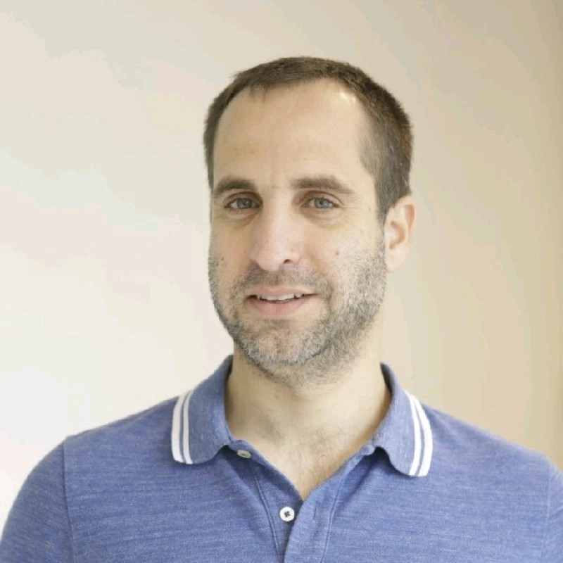

I am a PhD candidate (Direct Track) at the faculty of engneering at Tel-Aviv University and a research intern at IBM-Research, supervised by Prof. Raja Giryes.
My research focuses on Large Multimodal Models (LMMs). I am particularly interested in overcoming critical challenges towards reliable, enhanced, and efficient LMMs.
Contact: nimrod.shabtay [at] gmail [dot] com
Loading publications from Google Scholar...
Israel Computer Vision Day
Amazon Prime Sport AI-Club
Technion's Pixel-Club
The Cognitive Neuropsychology Lab (PI Prof. Avishai Henik) – BGU
Guest Speaker at "Gradient Dissent"